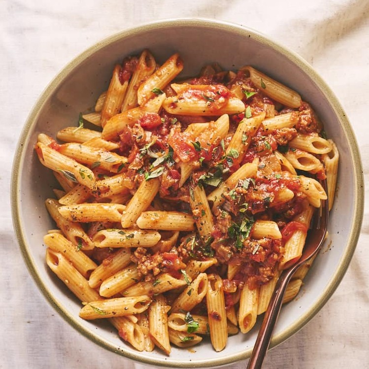

A super basic pasta recipe with ground italian sausage and red sauce.
- 1 box of penne
- A jar of your favorite red sauce
- 1lb ground italian sausage
- Bring a full pot of heavily salted water to a boil. Add your
pasta and cook until "al dente," or tender but a little firm and
chewy when bitten. Drain your pasta using a strainer.
- While your water comes to a boil and your pasta cooks, heat
a medium saucepan on medium high, and add your sausage, breaking
it up as it cooks.
- Once the sausage is fully cooked, add a jar of red sauce to
your saucepan, and simmer for about 10 minutes, stirring occasionally.
- Return your pasta to the pot, add your sauce, stir, serve, and enjoy!